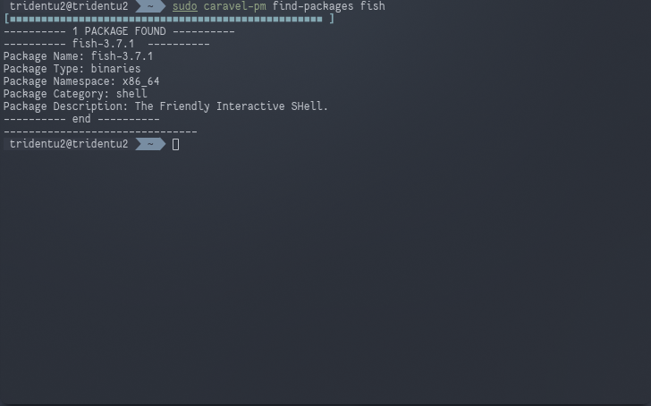
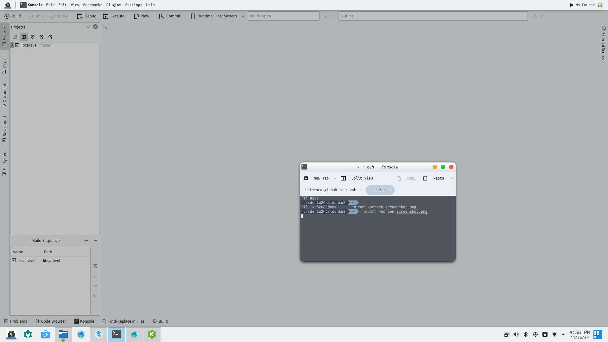

Tridentu 2K has Wine support out of the box. This means that you can run Windows apps from you system.

Caravel
The Caravel Package Manager is specifically built for Tridentu Linux. It features easy downloading and installation of packages (dotfiles included), Lua scripting (for hooks and installation scripts) and a simple manifest.
Package Manager

AppImage Support
Tridentu Linux comes with AppImage support out of the box like most distros. But there's more. It features not only support, but extensively features it too (a dedicated folder and launcher widget to be precise).
Built-in feature

Elegant Desktop
For elegance and usability, Tridentu 2K comes with an elegant and simple look and feel (similar to MacOS). If you want to change it, there are multiple tools for that.
Built-in feature